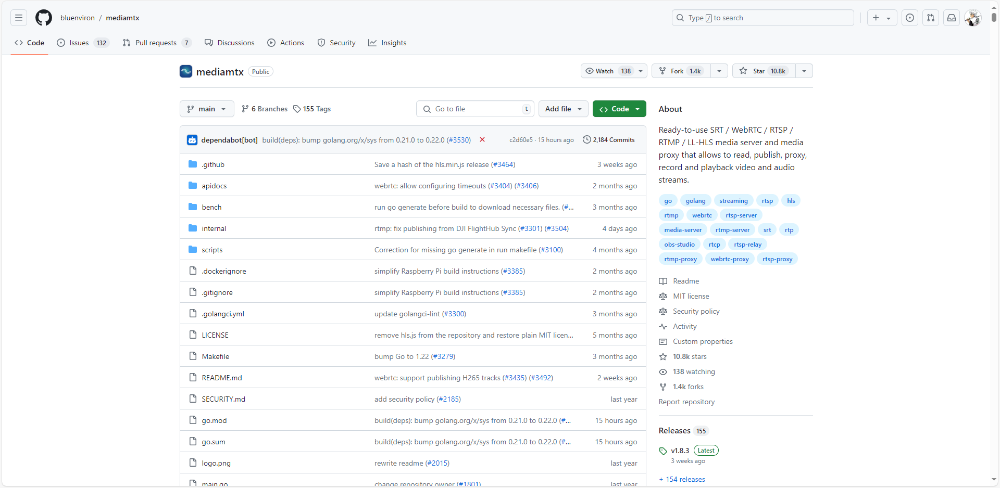
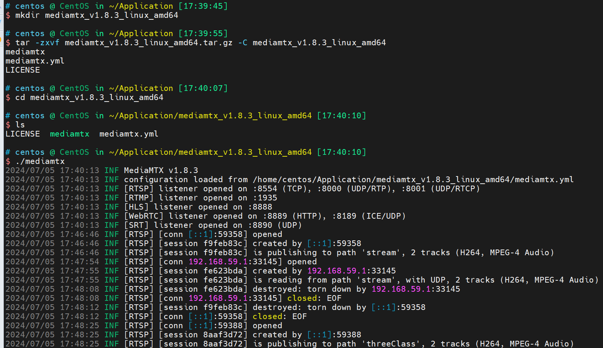
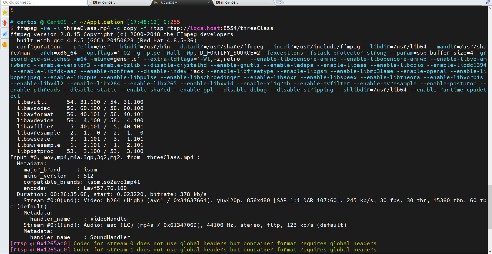
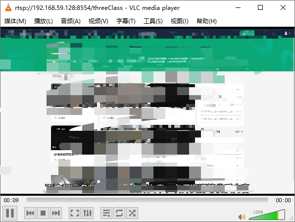

1. 下载mediamtx。

2. 解压mediamtx_v1.8.3_linux_amd64.tar.gz并运行。

3. 利用ffmpeg进行推流，推流地址的PATH可以自定义。
ffmpeg -re -stream_loop -1 -i threeClass.mp4 -c copy -f rtsp rtsp://localhost:8554/threeClass

4. windows电脑上用vlc进行播放，推流服务的地址是192.168.59.128，vlc播放的地址为rtsp://192.168.59.128:8554/threeClass。
